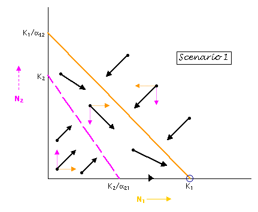
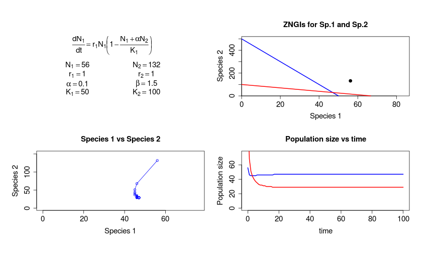
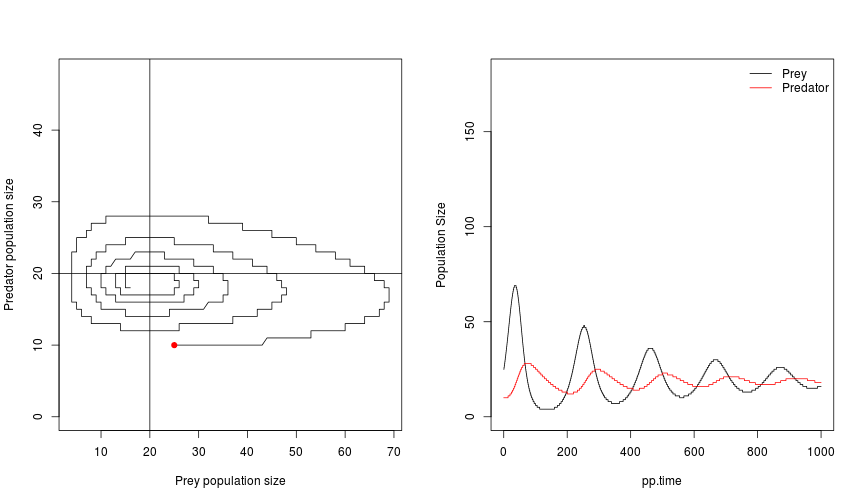

Differential Equations in R
An introduction with Lotka-Volterra competition models
Gaurav Kandlikar & Marcel Vaz
Kraft Lab, University of Maryland
From the simple...
\[ \frac{dN}{dt} = (rN) \] \[ \frac{dI}{dt} = \frac{\alpha+d+\nu}{\beta} \]
From the simple...
\[ \frac{dN}{dt} = (rN) \] \[ \frac{dI}{dt} = \frac{\alpha+d+\nu}{\beta} \]
To the slightly more complicated
\[ \frac{dN_{i}}{dt} = (rN)\left(1-\frac{N_{i} + \sum\limits_{j=1}^j \alpha_{j,i}*N_{j}}{K_{1}}\right) \]
To the even more complicated
\[ \lambda_{\bar{i}} (D - x) = (1 - m) \left( \frac{J-N_{i}-X}{J-D} \right) \]
\[ Pr\{N_{i},N_{j},N_{k}, \ldots , N_{s} | N_{i},N_{j},N_{k}, \ldots , N_{s} \} = \]
\[ \sum\limits_{i=1}^s \frac{N_{i}}{J} \left[ mP_{i} + (1-m) \left( \frac{N_{i}-1}{J-1} \right) \right] \]
\[ f_{D,s} = \frac{\rho C_{D,s}A}{m} \vert V_{a}-V_{p} \vert (V_{a} - V_{p}) \]
Refresher on Differential Equations
- Differential equations are used when the rate of change of a quantity depends on the quantity itself
- E.g "How fast you eat is a function of how much food you have eaten so far"
- For an ecological example, "How fast a population grows is a function of how big the population already is"
Brian McGill, on Dynamic Ecology
We are forced to use static illustrations to convey dynamic concepts.

R is a powerful pedagogical tool. Refresher on Lotka-Volterra competition
- Consider two groups of grad students: group 1 and group 2 .
There is a limited supply of coffee in the department, for which the two groups compete.

- Grad students' coffee consumption is decreased by others in the same group (intraspecific competition) and grad students in other groups (interspecific competition)
Refresher on Lotka-Volterra Competition
- Consider a two-species system.
- \(N_{1}\) and \(N_{2}\) represent population sizes of the two groups
- L-V competition equations allow us to project changes in \(N\) over time
- \[ \frac{dN_{1}}{dt} = (rN)\left(1-\frac{N_{1} + \alpha_{2,1}*N_{2}}{K_{1}}\right) \]
- \[ \frac{dN_{2}}{dt} = (rN)\left(1-\frac{N_{2} + \alpha_{1,2}*N_{1}}{K_{2}}\right) \]
Refresher on Lotka-Volterra Competition
\[ \frac{dN_{1}}{dt} = (rN)\left(1-\frac{N_{1} + \alpha_{2,1}*N_{2}}{K_{1}}\right) \]
The equilibrium value of \(N_{1}\) is a function of \(\alpha\) and \(N_{2}\):
\[ \hat{N_{1}} = K + \alpha * N_{2} \]
Base
Rlacks an ODE solver, but packagedeSolvecomes to the rescue.
Introducing deSolve
# install.packages("deSolve")
require("deSolve")
ls("package:deSolve")
## [1] "aquaphy" "ccl4data" "ccl4model"
## [4] "cleanEventTimes" "daspk" "dede"
## [7] "diagnostics" "diagnostics.default" "diagnostics.deSolve"
## [10] "DLLfunc" "DLLres" "euler"
## [13] "euler.1D" "lagderiv" "lagvalue"
## [16] "lsoda" "lsodar" "lsode"
## [19] "lsodes" "matplot.1D" "nearestEvent"
## [22] "ode" "ode.1D" "ode.2D"
## [25] "ode.3D" "ode.band" "plot.1D"
## [28] "radau" "rk" "rk4"
## [31] "rkMethod" "SCOC" "timestep"
## [34] "vode" "zvode"
Introducing the function ode
str(ode)
## function (y, times, func, parms, method = c("lsoda", "lsode", "lsodes",
## "lsodar", "vode", "daspk", "euler", "rk4", "ode23", "ode45", "radau",
## "bdf", "bdf_d", "adams", "impAdams", "impAdams_d", "iteration"),
## ...)
How to use ode
str(ode)
## function (y, times, func, parms, method = c("lsoda", "lsode", "lsodes",
## "lsodar", "vode", "daspk", "euler", "rk4", "ode23", "ode45", "radau",
## "bdf", "bdf_d", "adams", "impAdams", "impAdams_d", "iteration"),
## ...)
y= initial values of the system (here, \(N_{1}\) and \(N_{2}\))times= length of time steps we want to projectfunc= a user-defined function to solve (here, the L-V equations!)parms= the parameters to be used infunc(here, \(\alpha\), \(K_{1}\), etc.)
Setting up the user-defined func
# Define the function lv
lv <- function (time , init , params) {
# set everything up as a list to be accessed throughout the function
with (as.list(c(time , init , params)), {
# description of parameters to be included in params:
# r1 = growth rate of Sp. 1; r2 = growth rate of Sp. 2
# N = population size of Sp. 1; P = Population Size Sp. 2
# a = competitive impact of Sp. 2 on Sp. 1; b = competitive impact of Sp 1 on Sp 2
# K1 and K2 = carrying capacities of Sp. 1 and Sp. 2, respectively
# Define the pair of ODEs:
# Growth of species 1 is a function of species 2
N1 <- ( r1 * N * (1 - (N+a*P) / K1) )
# Growth of species 2 is a function of species 1
N2 <- ( r2 * P * (1 - (P+b*N) / K2) )
# Return a list of the current population size of Sp.1 and Sp. 2
return (list (c (N1 , N2)))
})
}
Testing lv
Provide a set of starting parameters:
# randomly select values for starting N1 and N2
p <- runif(n = 2, min = 50, max = 150)
init<-c(N = floor(p[1]), P = floor (p[2]))
# run the ODE for 100 time steps
time <- seq (0, 100, by=1)
# define species growth rates, carrying capacities and interspecific competition parameters
params <- c(r1 = 1, b = 1.5 , K1 = 50 , r2 = 1, a = .1 , K2 = 100)
# run the ODE
lvout <- floor(as.data.frame(ode(func=lv,y=init,parms=params,times=time)))
str(lvout)
Testing lv
## 'data.frame': 101 obs. of 3 variables:
## $ time: num 0 1 2 3 4 5 6 7 8 9 ...
## $ N : num 56 46 45 45 45 45 46 46 46 46 ...
## $ P : num 132 68 51 44 40 37 35 33 32 32 ...
Fun with graphs
par(mfrow=c(2,2),bg="white")
# Plot equation and parameters
# Panel A: current parameter values
plot(1:10,type="n",xlab="",ylab="",xaxt="n",yaxt="n",bty="n")
text(5,9,expression(frac(dN[1],dt) == r[1]*N[1]*bgroup("(",1-frac(N[1]+alpha*N[2],K[1]),")")),cex=1.5)
text(3,5.7,bquote(N[1] == .(floor(p[1]))),cex=1.5)
text(7,5.7,bquote(N[2] == .(floor(p[2]))),cex=1.5)
text(3,4.2,bquote(r[1] == .(params["r1"])),cex=1.5)
text(7,4.2,bquote(r[2] == .(params["r2"])),cex=1.5)
text(3,2.7,bquote(alpha == .(params["a"])),cex=1.5)
text(7,2.7,bquote(beta == .(params["b"])),cex=1.5)
text(3,1.2,bquote(K[1] == .(params["K1"])),cex=1.5)
text(7,1.2,bquote(K[2] == .(params["K2"])),cex=1.5)
# Panel B: Zero Net Growth Isoclines based on parameters above.
plot(1,type="n",xlim=c(0,max(params["K1"],params["K2"]/params["b"])+20),
ylim=c(0,max(params["K2"] ,params["K1"]/params["a"])+20),
xlab ="Species 1",ylab="Species 2",main="ZNGIs for Sp.1 and Sp.2",
xaxs="i",yaxs="i",cex.axis=1.5,cex.lab=1.5)
lines (x = c(params["K1"],0),y = c(0,params["K1"]/params["a"]),lwd=2,col="blue")
lines (x = c(params["K2"]/params["b"], 0) ,y = c(0,params["K2"]),lwd=2,col="red")
points (x = p[1] , y = p[2] , cex = 2 , pch = 20)
# Plot out the results of the ODE.
# Panel C: Sp. 1 vs Sp. 2
plot(lvout$P~lvout$N,type="o",col="blue",xlim=c(0,max(lvout$N)+20),
ylim=c(0,max(lvout$P)+20), main = "Species 1 vs Species 2",xlab="Species 1",
ylab="Species 2",cex.axis=1.5,cex.lab=1.5)
# Panel D: N1 and N2 vs Time
plot(lvout$N~time,ylim=c(0,max(lvout$N)+20),ylab="Population size",type="l",lwd=2,col="blue",cex.axis=1.5,cex.lab=1.5,main="Population size vs time")
points(lvout$P~time,col="red",type="l",lwd=2)
# legend (x =,col=c("blue","red"),lty=c(1,1),legend=c("Sp. 1", "Sp. 2"),bty="n",ncol=2)
Fun with graphs

Sourcing the code
source("~/path/to/lv_source.R")
p <- runif(n = 2, min = 50, max = 150)
init<-c(N = floor(p[1]), P = floor (p[2]))
time <- seq (0, 100, by=1)
params <- c(r1 = 1, b = 1.5 , K1 = 50 , r2 = 1, a = .1 , K2 = 100)
# run the ODE
lvout <- floor(as.data.frame(ode(func=lv_func,y=init,parms=params,times=time)))
plot.all(lvout)
The beauty of user-defined functions
Lotka-Volterra predator-prey dynamics model a two-species system:
\[ \frac{dN}{dT} = rN - aNP \]
\[ \frac{dP}{dT} = baNP - dP \]
Another pair of ODEs, another user-defined function!
Implementing L-V Predator-Prey systems
lvpp <- function(pp.time,pp.init,pp.params,prey_K=FALSE) {
with (as.list(c(pp.time,pp.init,pp.params)), {
# Parameters
# N = prey population size; P = predator population size
# r = intrinsic growth rate of prey
# a = predation efficiency
# b = conversion efficiency of prey into predator
# d = intrinsic dseath rate of predator
# prey_k = carrying capacity for prey; only used if user-defined
if (exists("prey_k")) {
dNdt <- ((r*N)*(1-(N/prey_k)))- (a*N*P)
}
else {
dNdt <- (r*N) - (a*N*P)
}
dPdt <- (b*a*N*P) - (d*P)
return(list(c(dNdt,dPdt)))
})
}
Testing the Predator-Prey function
# Set ODE parameters
pp.time <-seq(0,3000,by=.1)
pp.params <- c(r=0.1,a=0.005,d=0.01,b=.1,prey_k=500)
# Set pp.initial population sizes of Prey (N) and Predator (P)
pp.init = c(N=25,P=10)
# Run the ODE
lvppout<-floor(as.data.frame(ode(func=lvpp,y=pp.init,parms=pp.params,times=pp.time)))
str (lvppout)
## 'data.frame': 30001 obs. of 3 variables:
## $ time: num 0 0 0 0 0 0 0 0 0 0 ...
## $ N : num 25 25 25 25 25 25 25 25 25 26 ...
## $ P : num 10 10 10 10 10 10 10 10 10 10 ...
More fun with graphs
par(mfrow=c(1,2),bg="white")
# Plot P vs N; draw in the starting N and P parameters, draw in the ZNGIs
plot (lvppout$P~lvppout$N,ylim=c(0,max(lvppout$P)+20),type="l",xlab="Prey population size",ylab="Predator population size")
points (x=pp.init["N"],y=pp.init["P"],col="red",pch=19)
abline (v=pp.params["d"]/(pp.params["b"]*pp.params["a"]))
abline (b=pp.params["r"]/(prey_k*pp.params["a"]), a = pp.params["r"]/pp.params["a"])
# Plot N & P vs pp.time
plot(lvppout$N~pp.time,type="l",xlab="pp.time",ylab="Population Size",ylim=c(0,max(max(lvout$N),max(lvout$P))+50))
points(lvppout$P~pp.time,col="red",type="l")
legend(x="topright",col=c("black","red"),lty=1,legend=c("Prey","Predator"),bty="n")

General approach to solving ODEs
- Create a new user-defined function to perform the actual calculations at each time step.
- Define parameters to run with the functions
- Run the ODE, save the output to a dataframe
- Party
Improvements
- ODEs have steady-states
- \[ \hat{N_{1}} = K + \alpha * N_{2} \]
#########################################
# Attempting to run only to stead state #
#########################################
rootfun <- function(Time, State, Pars) {
dstate <- unlist(lv(Time, State, Pars))
sum(abs(dstate)) - 1e-4
}
steady.lvout<-as.data.frame(lsodar(func=lv,,y=init,parms=params,times=time,rootfun=rootfun))
steady.lvout=floor(lvout)
##########################################
# End attempt to run only to stead state #
##########################################
Improvements
- Animate the graphs to show the growth of the populations
Improvements
- Wrap all of these functions under a Web-app with a nice GUI?!
References
- Gotelli, N. A Primer of Ecology. 4th Ed. Sinauer Associates.
- Karline Soetaert, Thomas Petzoldt, R. Woodrow Setzer (2010). Solving Differential Equations in R: Package deSolve Journal of Statistical Software, 33(9), 1--25. URL http://www.jstatsoft.org/v33/i09/.
- Ramnath Vaidyanathan (2012). slidify: Generate reproducible html5 slides from R markdown. R package version 0.4.5.http://ramnathv.github.com/slidify/
Inspiration:
- ROpenSci (www.ropensci.org)
- GitHub (www.github.com)
- RStudio/Shiny (www.shiny.rstudio.com)